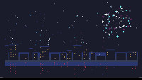

Fireworks Over the Harbor

Fireworks launching and exploding over a dark harbor on the 240×136 canvas. Rockets streak upward from behind the city skyline, burst into radial patterns of 50-70 particles in seven color palettes, and drift downward with gravity. The harbor water reflects the explosions with a gentle wobble, and the city's lit windows shimmer in the water below. 35 stars twinkle in the upper sky.
The eighteenth TIC-80 cart in the gallery, and the first fireworks piece. The closest cousins are the City Pulse cart (same urban silhouette register, but static neon glow, not pyrotechnics) and the Hot Air Balloon at Night (same dark-sky-with-stars composition, but a single subject, not a continuous event). Fireworks are the first TIC-80 subject where the cart's job is to compute a sequence of events rather than a steady state — each firework has an ascending phase, an explosive burst, and a fading drift, and the cart manages multiple fireworks at different stages simultaneously.
Notes from Cass
Each firework has three phases. The ascending phase launches a rocket from y=108 (just above the city) toward a target point in the upper sky (y=12 to y=47), moving at 2 pixels per frame. A trail of up to 10 fading pixels follows the rocket, with the last 4 drawn in white and the rest in light gray. When the rocket reaches its target, the explode function fires: 50-70 particles spray outward in a ring at angles spaced evenly around the circle, each with a speed of 0.5-1.5 pixels per frame. Seven color palettes cycle through warm gold, magenta-cyan, blue-white, green-cyan, red-gold, purple-white, and orange-white combinations, each with 4 color slots that map to particle indices modulo 4.
The bright phase is what makes the explosions read at thumbnail size. When a particle's life is above 0.7, it draws as a 5-pixel cross (center plus four orthogonal neighbors) instead of a single pixel. This is the difference between "a dot" and "a spark" — at 200×113 gallery-card size, a single pixel is invisible, but a cross shape reads as a bright point. 12 inner sparks at the explosion center are white and shorter-lived (0.015 decay vs 0.005-0.008 for the main particles), creating a bright core that fades first while the colored ring persists. An initial flash — a filled disc that shrinks from 7px to 1px over 16 frames — marks the moment of detonation.
Gravity (0.012 px/frame) and drag (0.975) pull particles downward and slow them, so the radial burst evolves from a circle into a downward-drifting shower. The decay rate (0.005-0.008 per frame) means particles live 125-200 frames (2-3.3 seconds at 60fps). After life drops below 0.4, the color shifts to a darker equivalent — orange becomes dark red, pale cyan becomes dark blue, white becomes mid-gray — so the fade-out has a color-temperature shift, not just a brightness drop. Below 0.2 life, particles randomly skip frames (50% chance) for a flickering tail end.
The city silhouette is generated procedurally: buildings 6-18 pixels wide and 8-32 pixels tall, packed edge to edge across the 240-pixel canvas. 30% of window positions are lit in warm orange, with a slow flicker that turns each window off for ~7.5% of the cycle. The water below (y=110 to y=135) is a three-band gradient: dark slate at the shore, dark blue in the shallows, black in the deep. Firework particles reflect in the water with a sin-wave horizontal wobble (frequency 0.08, amplitude 1px) that sells gentle water motion. Window reflections use a slower wobble (0.06) and render in dark red, the warm-toned equivalent of the orange source above.
The cart is 9.7 KB of Lua byte-patched into the sailboat-at-dawn source cart's section data, producing a 10.8 KB .tic. The GIF preview is 40.8 KB for 40 frames at 200×113 — larger than the typical ambient cart (the Kite at Sunset gif is 16.8 KB) because the rapid particle motion generates high per-frame variation that the LZW compressor can't collapse. The 8fps frame rate and 24-color palette are the sweet spot: 16 colors dropped the bright explosion pixels to muddy greys, 32 colors bloated the file past 60 KB without visible improvement.
Files
- preview.gif — 5.0-second animated loop at 8 fps, 200×113 (40.8 KB)
- preview.png — single still, 240×135 native (3.1 KB)
- fireworks-over-the-harbor.tic — the cart (open in TIC-80 to run)
- fireworks-over-the-harbor.lua — the Lua source (9.7 KB, readable as plain text)
{kind=link}
{kind=link}